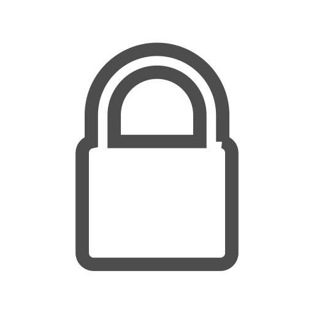

An Encryption Manifesto
20 Sep 2016
NOTE: This post is the first in a series about the practical development of crypto systems. If you like it, check back later to see if updates have been published.
Motivations
This manifesto was written to point at the deficiencies of a number of ideas now prevalent in encryption software. It deals with practical difficulties that arise when using encryption programs, not with limitations of the underlying mathematical theory.
Developers can live an healthier life and produce flexible and long-lasting software if they only simplify some of their assumptions. There is a sort "collective feeling" about what an encryption program should and should not do, that sometimes approaches a form of cargo-cult.
The dogmas of this cargo-cult limit the flexibility of the produced software. Breaking some of these dogmas we can create software that really adapts to the necessities of its users: the key for a long lasting life.
Philosophical Principles
Principle I: Security. The main objective of a cryptography system is to protect its users from a wide range of attacks. This is really difficult, since in cryptography any technique that differentiates (even just a little) a system from its intended behaviour is considered an attack.
We can not afford to sacrify security in exchange for a little user-friendliness, which most often isn't. User friendlyness in encryption systems is much more than a nice graphical interface: it is flexibility. Security remains, criteria for user-friendliness are always changing.
Principle II: Flexibility. Knowing the future doesn't not belong to us: we hardly know how our software is used today, predicting its future uses is impossible.
Flexibility often requires doing less from a developer's point of view, to allow the user to fill in what he really needs. In spite of this being simpler, developers always overdo things, limiting user's possibilities. Do not limit software flexibility: achieve the same interface in an esoteric way.
Principle III: Esoterism. Users are different: novices need good default settings, advanced users need systems that can be tailored to perfectly fit their work habits.
There is not much to write about this, just learn from the past. Write cryptography software like you are writing a great book: a great book that reveals different meanings to readers of different knowledge1.
Pragmatic Rules
PrRule 1: Portability. Information is hidden to be exchanged is a secure way, or to be stored for a long time (also in a secure way).
We have no control on what systems other people uses (nor we have the right to interfere with their choices: they may know more than us). We do not even control what systems will be available tomorrow and we ourselves will use.
A good crypto system must be so flexible to work (or potentially work) on every system available today 2. This is also a strong basis for the future, the concrete way.
PrRule 2: Simplicity of Understanding. The only true documentation of a cryptography system is its code. No document can replace code: code is where parameters are chosen, where algorithms are implemented (documentation can merely tell an algorithm's name), and where backdoors are hidden by hidden parties.
Every user, novice or expert, should be able to read the code and to map it against public implementations of the algorithms used. If this seems unlikely consider this: people live and die depending on how well they understand their operations. Developers do not risk their lives, users do: facing death, users will gain the understanding needed to adapt the systems they use.
PrRule 3: State of the Art. New algorithms and attacks are published every day, and often there is no time to wait for a patch (that may not arrive). A software unable to adapt die soon - sometime with its users.
PrRule 4: Lightness. Cryptography software does not need a long and complicated code, an elegant kernel is better. Cryptography does not need hundred of library dependencies, just the essentials since each link can break the chain.
Breaking the compilation chain is only slightly better than breaking the security chain: in both cases that software is useless. Cumbersome software does not belong to the future.
Theoric Rules
ThRule 1: no PRNG. Why should we condemn ourselves to endless pain tying our software with a PRNG? Some systems have no access to entropy sources, if they need entropy it must be imported from outside. Some system have only weaknened PRNGs, a cryptographic backdoor very difficult to detect.
If our crypto system only encrypts data, it should not implement nor provide a random data source. The PRNG is an external module, just allow an easy way to import randomness into the program.
ThRule 2: no Authentication. Why should an encryption system check if the provided passphrase is correct? It is user's responsibility to provide a correct passphrase. Why making brute forcing easier for attackers?
The only way to tell a correct passphrase from a wrong one should be the following: with a correct passphrase the user reads back the original message, with an incorrect passphrase he gets only garbage.
When authentication of data can be achieved easily, it can be achieved using external means. Otherwise it can not be achieved, and who says the contrary is lying to you 3.
ThRule 3: no Filesystem. It is the operating system that provides filesystem facilities, not a crypto system. If a filesystem is needed, the user should be able to choose whatever filesystem he wants: we can not limit its possible uses.
ThRule 4: no Copy. How could a crypto system be any good, if it requires the plaintext to be copied on an unencrypted support to work on it?
Plaintext should be unlocked in a transparent manner. Standard programs should be able to work on the plaintext in a transparent manner (not even knowing it is encrypted data). Re-encryption of plaintext should be transparent.
Any kind of data copy leads to failure.
Footnote 1. See also: "On the pedagogical motives for esoteric writings." Melzer 2007 - https://pdf.yt/d/pLzAvzFb7e8sWjll. Return to article.
Footnote 2. One of the main causes of the widespread adoption of Truecrypt was its ability to run and transfer data between every consumer operating system, combined with its easiness of use and flexibility. It did also other things right, some of which will be mentioned in this manifesto. Return to article.
Footnote 3. For example, how to implement proper data authentication in the case of full-disk encryption? See also: You don't want XTS. Return to article.